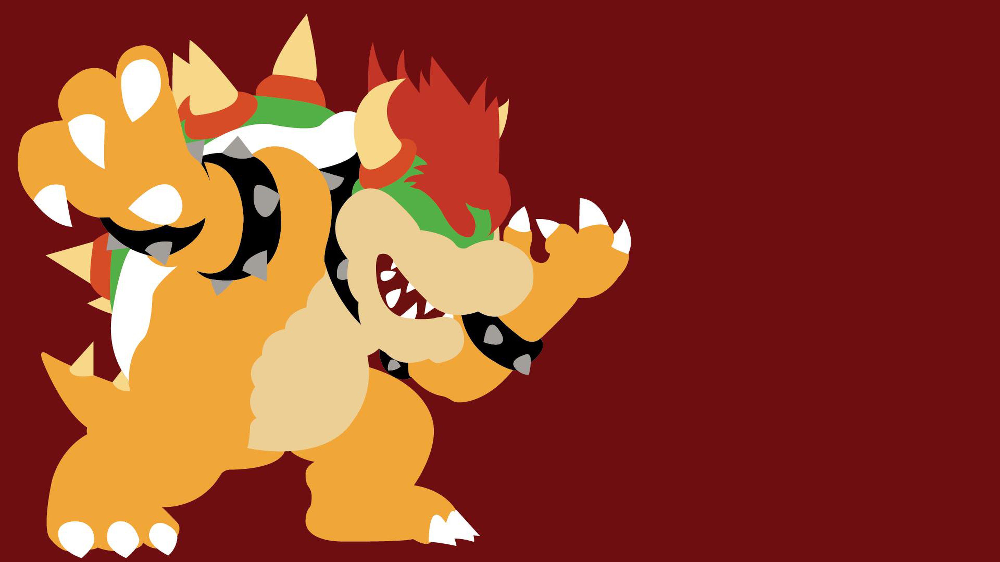

Valentin Then Bergh
My Work: As a tech designer, I specialize in composing game design elements into logically coherent
structures. Due to this characteristic, I enjoy working as an intermediary between designers and
programmers: On the design side, I contribute ideas & logic to new game mechanics, before I
translate the systems into flowcharts that programmers can readily implement. On the programming
side, I build design-heavy gameplay systems and organize assets to empower designers in crafting
gameplay more easily.
My Genres: Due to my focus on gameplay mechanics, I am especially drawn to work on ludic and minimalistic
games. Some specific genres include: platformers, metroidvanias, card-/monster-gatherers, logic puzzles, and music games.
My Experience: I studied at the Cologne Game Lab, where I collaborated on multiple group projects spanning several
weeks each. Throughout these, I gained experience in the collaborative use of Unity (C#, 4 years),
Unreal Engine (C++, 1 year), as well as organizational tools, like Git, Miro, and more.
My Plans: For the future, I'd like to learn how to contribute these skills in a professional environment.
Therefore, I am currently seeking internships as a tech designer to learn more about industry
standards, especially the pipeline from designing to programming game mechanics.